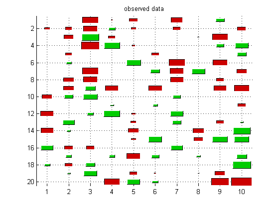
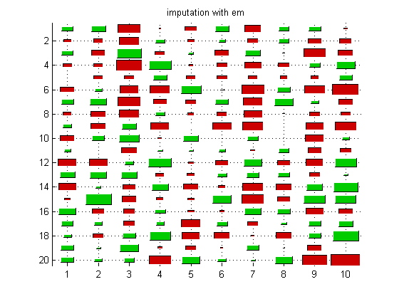
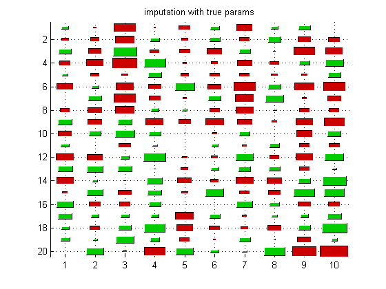
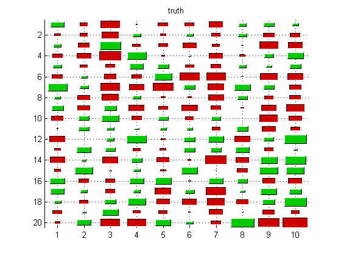
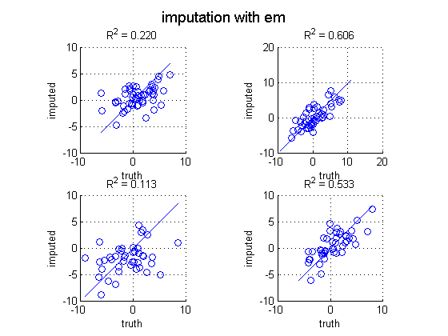
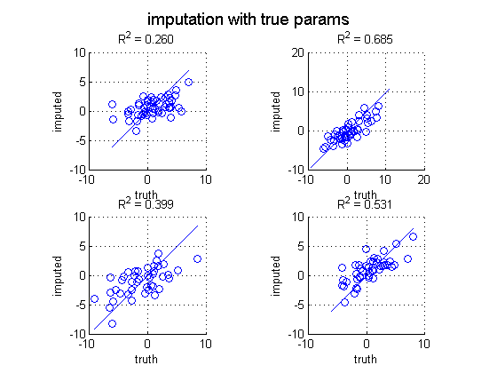

Contents
function gaussImputationDemo()
Make data
setSeed(1);
d = 10; n = 100; pcMissing = 0.5;
mu = randn(d,1); Sigma = randpd(d);
trueModel = struct('mu', mu, 'Sigma', Sigma);
Xfull = gaussSample(trueModel, n);
missing = rand(n,d) < pcMissing;
Xmiss = Xfull;
Xmiss(missing) = NaN;
Impute
[model, LLtrace] = gaussMissingFitEm(Xmiss, 'verbose', false);
[XimputeEM] = gaussImpute(model, Xmiss);
[XimputeTruth] = gaussImpute(trueModel, Xmiss);
Plotting
Xmiss0 = Xmiss; Xmiss0(isnan(Xmiss0))=0;
ndx = 1:20;
hintonDiagram(Xmiss0(ndx,:)); title('observed data');
printPmtkFigure('mvnImputeObs');
if 0
figure;
imagesc(XimputeEM(ndx,:) - Xfull(ndx,:));
colormap('gray'); colorbar
title('imputed - truth');
printPmtkFigure('mvnImputeDiff');
end
if 1
figure; hintonDiagram(XimputeEM(ndx,:)); title('imputation with em');
printPmtkFigure('mvnImputeImputeEM');
figure; hintonDiagram(XimputeTruth(ndx,:));
title('imputation with true params');
printPmtkFigure('mvnImputeImputeTruth')
figure; hintonDiagram(Xfull(ndx,:)); title('truth');
printPmtkFigure('mvnImputeTruth');
end
doPlot(Xmiss, Xfull, XimputeEM, 'imputation with em', 'mvnImputeScatterEm')
doPlot(Xmiss, Xfull, XimputeTruth, 'imputation with true params', 'mvnImputeScatterTruth')
     
end
function doPlot(Xmiss, Xfull, Ximpute, ttl, fname)
figure; nr = 2; nc = 2;
for j=1:(nr*nc)
subplot(nr, nc, j);
miss = find(isnan(Xmiss(:,j)));
scatter(Xfull(miss, j), Ximpute(miss,j))
xlabel('truth'); ylabel('imputed');
mini = min(Xfull(:,j)); maxi = max(Xfull(:,j));
line([mini maxi], [mini maxi]);
axis square
grid on
stats = regstats(Xfull(miss,j), Ximpute(miss,j));
r = stats.rsquare;
title(sprintf('R^2 = %5.3f', r))
end
suptitle(ttl)
printPmtkFigure(fname);
end